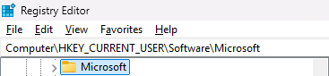
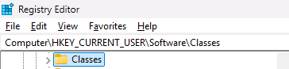
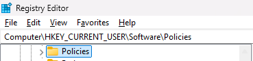

Overview: This post shares beginner-friendly notes about the role of the Windows Registry and its connection to the Windows boot process. The content below is only a small part of a much larger topic, but hopefully it’s useful to anyone who comes across it.
Have you ever wondered what actually happens after pressing the power button on your computer or laptop?
The process that begins when you press the power button is called the Boot Sequence. It is typically divided into three phases: BIOS Phase, Boot Loader Phase, and Kernel Phase. Let’s dive into it.
-
BIOS Phase:
After pressing the power button, the system runs POST (Power-On Self-Test) to verify that essential hardware components are functioning properly. Next, the BIOS searches for a bootable device based on the configured boot order.
The selected boot device loads the MBR (Master Boot Record) into RAM and executes its boot code, which looks for the active partition. Finally, it executes the bootstrap code in the PBR (Partition Boot Record), which loads bootmgr.exe and transfers control to the Boot Loader Phase.
-
Boot Loader Phase
bootmgr.exe, located in the root of the system partition, is executed. It loads the BCD (Boot Configuration Data), which contains boot configuration parameters such as the OS location, OS type, and boot options. It then passes these parameters to the OS loader, which is winload.exe on Windows.
What is the purpose of winload.exe? It loads essential operating system components into memory, including ntoskrnl.exe, HAL (hal.dll), boot-start drivers, and the SYSTEM registry hive . After that, control is transferred to the Kernel Phase.
-
Kernel Phase
In this phase, the kernel performs two main tasks: low-level initialization and system component loading.
-
Low-level initialization
- Set up memory management, initialize interrupts, and initialize the scheduler.
- Mount the SYSTEM registry hive, located at %SystemRoot%\System32\Config\SYSTEM, which becomes HKLM\SYSTEM.
- Load additional drivers based on configuration stored in the SYSTEM registry hive (e.g., start type, ImagePath, load order). User mode has not been created yet at this time.
-
After low-level initialization is complete, the system starts the Session Manager Subsystem, smss.exe.
smss.exe creates Session 0 and mounts the remaining registry hives: SAM, SECURITY, SOFTWARE, and DEFAULT. It also initializes environment variables, creates the paging file, and starts Session 1, which launches: csrss.exe, wininit.exe, and winlogon.exe.
wininit.exe starts services.exe (Service Control Manager) and lsass.exe. The SCM launches services based on entries in HKLM\SYSTEM\CurrentControlSet\Services.
In parallel, winlogon.exe handles interactive logon and sends credentials to lsass.exe for verification. After a successful logon, the user profile hive is mounted as HKCU. Then userinit.exe starts explorer.exe.
-
Low-level initialization
In summary: we see that the Registry Hive plays a crucial role in the boot sequence, as shown in the table below:
| Phase | Used hive |
| Kernel Phase | HKLM\SYSTEM |
| smss.exe | HKLM\SYSTEM\SAM, SECURITY, SOFTWARE |
| services | SYSTEM\Services |
| lsass.exe | HKLM\SYSTEM\SAM, SECURITY |
| User login | HKCU |
The next step is to explore what is Window Registry and deeply drive into 2 important keys which is HKCU and HKLM
In definition The Windows Registry is a hierarchical database used by the operating system to store low-level configuration settings, options, and information for both the system and applications.
The registry consists of keys and values organized in a hierarchical, tree-like structure. Each key can contain subkeys and values, allowing configuration data to be stored and accessed efficiently. The registry can be viewed and modified using the Registry Editor (regedit.exe).
Structure of Registry
- Registry root keys are similar to folders/directories in a file system and are organized into a tree-like structure. Each node is called a key. Each key can contain both subkeys and values (data entries).
- A key can have any number of values, and values can store data in different formats.
- The following illustration shows an example registry key structure in Registry Editor:
-
Each “folder” under My Computer represents a root key.
-
For example, HKEY_CURRENT_USER has subkeys such as AppEvents, Console, Control Panel, Environment, etc. Each of these subkeys can have their own subkeys and values. Each value has a name, a type, and associated data.
Fact: A registry tree can be 512 levels deep, and up to 32 levels can be created at a time through a single registry API call.
DETAILED BREAKDOWN
HKEY_CLASSES_ROOT (HKCR):
This key defines how Windows handles file types and COM components. It maps file extensions to applications. Example:
Windows recognizes the .exe extension as an executable file and runs it using the command defined in the registry:
In other words, Windows does not purely “hardcode” how to handle these extensions—it looks up instructions in the registry.
HKEY_CURRENT_USER (HKCU):
HKCU contains configuration for the user who is currently logged on. It stores things like environment variables, desktop settings, network connections, and more.
HKCU does not store data directly. Instead, it is a shortcut (mapping) to the current user’s hive under: HKEY_USERS\<User-SID>. This mapping is created at logon and removed at logoff.
HKCU is a shortcut to:
HKEY_USERS\<User-SID>
HKCU does not require administrative privileges because it stores per-user configuration. Windows allows users to modify their own registry hive.
Some common subkeys under HKEY_CURRENT_USER:
- AppEvents: Sound events for the system and applications. Inside this subkey also has 2 more childs which is EventLabels and Schemes
- Console: Configuration for CMD/PowerShell (font, colors, etc.)
- Environment: User environment variables loaded at logon
- Control Panel: Accessibility, regional, and desktop appearance settings
- Network: Mapped network drives (reconnected at logon)
- Printers: Printer mappings
- Volatile Environment: Runtime environment variables
- System: User-level system behavior settings
- ...
Besides those, one especially important subkey is Software.
HKEY_CURRENT_USER\Software contains user-specific software configuration that applies only to the current user.
It can be roughly divided into four main parts:
-
Application settings: Configuration for installed applications

-
Windows configuration (user-level)

The most important children of this subkey are Windows and Windows NT, which store user-specific Windows settings.
HKCU └─ Software └─ Microsoft ├─ Windows │ └─ CurrentVersion │ ├─ Explorer --> File Explorer & shell settings (Desktop, Taskbar, etc.) │ │ └─ Advanced --> Useful settings like file extensions, hidden files, etc. │ │ ├─ HideFileExt (DWORD) --> 0 = show extensions, 1 = hide │ │ └─ ShowSuperHidden (DWORD) --> 1 = show protected OS files │ ├─ Run --> Programs that run at user logon │ ├─ RunOnce --> Programs that run once at logon, then get removed │ └─ Policies --> User policies └─ WindowsNT └─ CurrentVersion └─ AppCompatFlags └─ Layers --> Compatibility mode overrides -
File extensions and COM (user-level override)

Windows uses registry data to resolve file associations and COM objects. One important point is that HKCR is not a “real” key—it is a merged view of HKCU and HKLM. HKCU takes precedence over HKLM when there are conflicts.
-
Policies and environment

Stores user-specific policies and environment-related settings. Users can customize to prevent an extention to run.
HKEY_LOCAL_MACHINE (HKLM):
HKLM stores system-wide configuration that applies to all users. It includes information about hardware, software, services, drivers, and the operating system. I would say that this is the most important Registry Hive. The structure of this key is displayed as below:
HKLM
├─ BCD00000000
├─ SOFTWARE
├─ HARDWARE
├─ SECURITY
├─ SAM
└─ SYSTEM
-
We will start with BCD00000000. The "BCD" is stand for Boot Configuration Data which I have mentioned early in Boot Sequence. So it contains informations using by the bootmgr to get to know where is the OS location, OS type, and boot options,...
-
And the next move is SOFTWARE. You may across the word "Software" which have been mentioned above in HKCU. Kinda similar to HKCU but applies to all users instead of current logon user like HKCU. But with Polices all users will force to follow it. Any normal setting, HKCU is the precedence.
-
Contains information about Computer such as CPU, RAM,...
-
SAM which is stand for "Security Account Manager". It contains information of all local accounts on the computer. Stores username, group, and password (already hashed). You can copy SAM and SYSTEM files or use a tool to read data in the RAM of lsass.exe.
-
If you are playing as normal role users you may not see its child of this Security Hive. I prefer you to download PsExec to explore these child. So this hive contains:
- Local Security Policy
- LSA (Local Security Authority) data
- Cached domain credentials: Store cached for last login session. LSASS compare input with cached. Login in if true.
- LSA Secrets: Store password of computer account in domain. In some case windows has to sending plaintext password (without hash). So it will need to encrypt and store, and the LSASS is the key
- HKEY_LOCAL_MACHINE\SYSTEM is a core Windows registry hive that stores system-level configuration related to booting, the kernel, device drivers, services, and hardware. It defines which drivers are loaded during startup, how services are started, and how the operating system interacts with hardware components. During system boot, Windows reads this hive to select the active ControlSet and initialize the operating environment, making it critical to system stability—incorrect changes can prevent Windows from starting properly.
HKLM
├─ SYSTEM
└─ CurrentControlSet -> Contains necessary configuration info for Windows to boot and operate. Includes drivers, services, system parameters.
├─ Services
├─ Control -> Contains system configurations such as computer name, memory management, and time zone.
├─ Hardware Profiles ->
├─ Enum -> Hardware ever been pluged in
└─ MountedDevices ->
HKLM\SYSTEM\CurrentControlSet\Services
-
Stores configuration for services and drivers. Each
driver/service typically has a key like:
HKLM\SYSTEM\CurrentControlSet\Services\<Name>. - The Service Control Manager (SCM) uses these entries to start/stop/manage services. The OS also uses them during boot (and when new hardware is detected) to load drivers based on configuration and dependencies.
- CurrentControlSet is a pointer to one of the ControlSet00x keys (e.g., ControlSet001). It usually points to the control set used for the most recent successful boot.
Some common values in
HKLM\SYSTEM\CurrentControlSet\Services\<Name>:
-
Start: Determines when the service/driver starts- 0x0: Boot Start
- 0x1: System Start
- 0x2: Automatic Start
- 0x3: Manual (on demand)
- 0x4: Disabled
-
Type: Specifies the service type- 0x1: Kernel driver
- 0x2: File system driver
- 0x10: Win32 own process
- 0x20: Win32 share process
-
ErrorControl: Controls boot behavior if the driver fails to start- 0x0: Ignore
- 0x1: Normal
- 0x2: Severe
- 0x3: Critical
HKLM\SYSTEM\CurrentControlSet\Control
- Contains settings that control system startup and device configuration.
- Example: Class stores device setup class information (by class GUID).
HKLM\SYSTEM\CurrentControlSet\Enum
- Stores device enumeration data managed by the Plug and Play (PnP) manager.
HKLM\SYSTEM\CurrentControlSet\MountedDevices
- Stores volume mappings (drive letters and volume GUIDs). Windows uses this to keep drive assignments consistent across reboots.
HKU
Contains all registry hive of all user currently loaded on system
HKEY_USERS\[SID_of_current_logged-in_user]
↓
HKEY_USERS\S-1-5-18 → became HKCU
Practice task: Try changing the mouse speed using the Windows Registry.
The current mouse speed setting is stored in the following registry key (value is 1), as shown above. To access it, open HKEY_CURRENT_USER and navigate to the subkey that contains mouse configuration. Then update the mouse speed value. The full process is shown below.
#include <Windows.h>
#include <stdio.h>
LSTATUS get_mouse_speed_registry(HKEY key_handle, WCHAR name[MAX_PATH], WCHAR* value, PDWORD value_length) {
return RegQueryValueExW(key_handle, name, 0, NULL, (LPBYTE)value, value_length);
}
LSTATUS modify_mouse_speed(HKEY key_handle,LPWSTR value_name, LPWSTR new_speed ) {
DWORD length_of_new_data = (lstrlenW(new_speed) + 1) * sizeof(WCHAR);
return RegSetValueExW(key_handle, value_name, 0, REG_SZ, (LPBYTE)new_speed, length_of_new_data);
}
int main() {
HKEY key_handle = NULL;
LSTATUS reg_status;
WCHAR value[MAX_PATH];
DWORD value_length = sizeof(value);
LPWSTR new_speed = L"10";
reg_status = RegOpenKeyExW(HKEY_CURRENT_USER, L"Control Panel\\Mouse", 0, KEY_ALL_ACCESS, &key_handle);
if (reg_status == ERROR_SUCCESS) {
wprintf(L"Open registry success, address at %p\n", &key_handle);
reg_status = modify_mouse_speed(key_handle, L"MouseSpeed", new_speed);
reg_status = get_mouse_speed_registry(key_handle, L"MouseSpeed", value, &value_length);
if (reg_status == ERROR_SUCCESS) {
wprintf(L"Current Mouse Speed: %s\n ", value);
}
else {
wprintf(L"Error reading value");
}
}
else {
wprintf(L"Failed to open registry key");
}
RegCloseKey(key_handle);
return 0;
}
The result after changing the mouse speed from 1 to 10 is shown below.